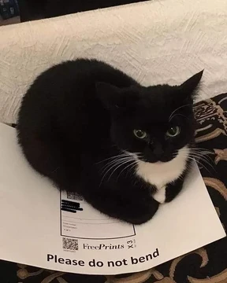

HELLO, I'M
Halo! Saya adalah mahasiswa Universitas Tarumanagara yang tertarik dengan programming, teknologi, dan pengembangan aplikasi.
NIM: 535250174
View My Projects
ABOUT ME
Saya merupakan mahasiswa Universitas Tarumanagara yang sedang mempelajari berbagai bidang teknologi informasi. Saya memiliki ketertarikan terhadap programming, web development, database, dan software development.
Selama perkuliahan, saya telah mengerjakan beberapa project yang berkaitan dengan backend programming, struktur data, matematika diskrit, dan aljabar linear.
Selain bidang akademik, saya juga aktif dalam kegiatan organisasi. Pada tahun 2026, saya bergabung dengan BEM Universitas Tarumanagara dan dipercaya sebagai Sekretaris Pelaksana dalam program kerja UKM Open House 2026.
MY JOURNEY
Menempuh pendidikan sekolah dasar dan mengikuti berbagai kegiatan sekolah, seperti dalam ekskul futsal.
Melanjutkan pendidikan dan mulai tertarik dengan teknologi serta komputer.
Mengembangkan kemampuan akademik dan mulai mempelajari bidang teknologi.
Program Studi Teknik Informatika. Mempelajari programming, database, algoritma, struktur data, dan teknologi informasi.
Bergabung dalam Badan Eksekutif Mahasiswa Universitas Tarumanagara dan berpartisipasi dalam kegiatan serta program kerja organisasi.
Sekretaris Pelaksana
Memegang posisi sebagai Sekretaris Pelaksana dalam program kerja UKM Open House 2026, dengan tanggung jawab dalam administrasi, koordinasi, dan persiapan pelaksanaan kegiatan.
MY WORK
Backend Programming
Website digital banking sederhana yang dibuat untuk mempelajari backend development menggunakan PHP, Laravel, dan MySQL.
Mathematics Project
Project yang berkaitan dengan penerapan konsep aljabar linear dan matematika diskrit dalam penyelesaian permasalahan tertentu.
Data Structure
Project yang menerapkan konsep struktur data seperti linked list, sorting, searching, tree, dan graph untuk menyelesaikan permasalahan.
GET IN TOUCH
Jika ingin menghubungi saya, bisa melalui email atau social media berikut.
Contact Me